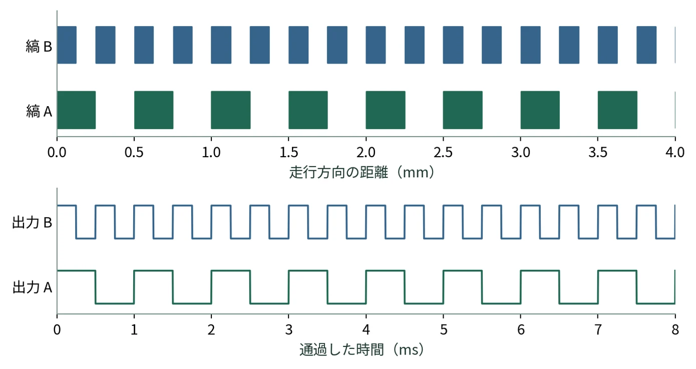

第57章 フィルムに描いた縞はなぜ和音になるのか
フィルムに描いた縞が音になる仕組みと、映像と音の同期。
この章で学ぶこと
- 光学録音で、空間の縞が周波数になる式を知る
- 映像のコマと音声の標本の時間刻みの違いを理解する
- 音と映像のずれを自分で作って比べる
ノーマン・マクラレンの短編《Synchromy》（1971）の冒頭では、画面中央の一本の列に横縞が入り、打鍵するような音が聞こえる。途中で別の高さが加わり、画面にも異なる縞の列が現れる。映像を見てから音を割り当てたようにも聞こえる。制作ノートから分かる手順は逆向きである。作曲した音をまず縞のカードでフィルムに撮影し、その縞を光学プリンターで画面の領域に写した。ひとつの物体がスピーカーとスクリーンへと枝分かれしたのである。
空間的な模様の中にある周波数
幅の狭いスリットに一定の明るさの光を当て、その前で明暗の縞を等速に送る模型を考えよう。走行方向に測った距離を 、位置 における透過率を 、送り速度を とする。読取部を十分に狭い点と近似すれば、時刻 の出力電流は に比例する。明線一本と暗線一本で一周期、その空間周期を とする。縞が一周期ぶん進む条件は だから、時間周期は 、周波数は 。フィルムは空間の周期を耳に届く時間の周期へ変換している。

同じ密度の縞を、同じ向きのまま横に幅広く露光するとどうなるか。読み取る光の総量の変動幅が変わり、理想読取りでは周波数は同じままで振幅が変わる。実作ではマクラレンが可動シャッターで記録幅を調整して強弱を作った。なお画面に帯を二列写したことと、二声を鳴らしたことを分けて観察しよう。一声の時期にも同じ模様が複数列に複写され得る。制作ノートでは実際の音楽は三声まで、絵は十一列まで使う。ある高さの音にある色を必然的に対応させる色聴の体系も仮定されていない。色の境目、縞の細かさ、声部の出入りの三つを別の記録欄にすれば、どの関係を作者が選べたかが分かる。
一コマの内部には何個の音の周期があるか
毎秒24コマの映像と、毎秒48,000標本の音声を組み合わせて短編を作る。一コマは音声の 標本ぶんである。440 Hzの音はその間に 周期進む。映像の一コマに一個の数だけを対応づけて直接音にすれば、440 Hzの振動を復元するには足りない。一コマの領域に多数の細かな縞を置き、連続的に光学読取りすれば、コマの切替速度より高い音を記録できる。デジタルの編集画面で一秒ぶんの映像と波形を同じ幅に拡大しても、それぞれの原データの時間刻みは別々である。
やってみよう
比較実験。 《Synchromy》の冒頭を消音で見て、縞が始まる位置だけ机に指を置く。次に画面を隠して、音の高さが初めて変わる箇所、二声目を聞き取った箇所を記す。最後に両方を合わせ、縞の色だけが変わった場所にも新しい音があるかを調べる。著者の制作ノートを読むのはその後でよい。観察から「縞と音は対応する」と推論できても、「ある色はいつも特定の音高と対応する」までは言えない。この区別は、音色の分析でヴィブラフォンとフルートが同じ時刻に動くときにも使える。
自分で同期を作り、わざと崩す
八秒の無音動画を毎秒24コマで用意する。手で黒い紙を白い机へ置く動作を一回だけ映す。接触した最初のコマに印を置き、短い木片の音を重ねる。同じ映像に対して、音だけを三コマ先行、一致、三コマ遅延の三通りにして書き出す。各自が「動かす合図」「接触」「遅れて別の物が落ちる」のうちどれと感じたか、名称を伏せて記す。三コマは125 msである。感想が一致するという法則を仮定する必要はない。装置の遅延を含む絶対的な知覚閾値の測定と、同一環境での三つの編集結果の比較は区別する。
音楽的に発展させるなら、毎回の移動距離が同じ石を三つ用意し、編集上で接触の間隔だけを短くしていく。音のピッチや素材を変えずに、間隔の短縮だけで切迫を作れるか。今度は映像の間隔を元に戻し、音だけを同じ時間列で並べる。映像と音は単独では等間隔・加速の片方なのに、両方を合わせると一つの身体の運動に聞こえる瞬間と、独立した二つの動きに割れる瞬間が生じうる。そこで拍の群化の説明を、身体の予測を含む説明へ拡張できる。
やってみよう
問いと解答。 毎秒24コマ、毎分100拍の音楽に四分音符ごとの場面転換を重ねる。理想的な拍間隔は コマで、整数でない。各拍の絶対位置を最寄りのコマに丸めれば、第0〜5拍は コマ。隣接間隔は14または15となり、誤差は半コマ以内。各間隔を最初から14コマに固定すれば、五間隔では70コマとなり、理想位置より2コマ早い。格子への丸めを繰り返す場所ひとつで、映像と同じリズムが長時間保たれるかどうかが変わる。
ここだけ押さえる
- 周波数＝送り速度÷縞の周期。
- 24コマ/秒の1コマは、48 kHz の音声では2000標本にあたる。
- 拍をコマにどう丸めるかで、長時間の同期が保てるかが変わる。
この章の資料
- 冒頭の中央列と、後から加わる別の縞を画面と音で照合する。カナダ国立映画制作庁《Synchromy》・同庁の公式動画
- 1ページ目でカードと可動シャッター、2ページ目で列の複写と着色を確認する。マクラレン本人の制作ノート
- オシロスコープに映す音からフィルム上に描く音へ進む技法の実演。装置によって時間変化をどの方向に展開したかを追う。《Pen Point Percussion》